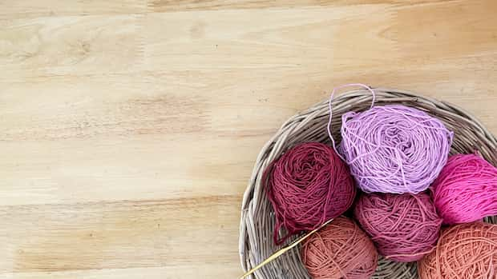
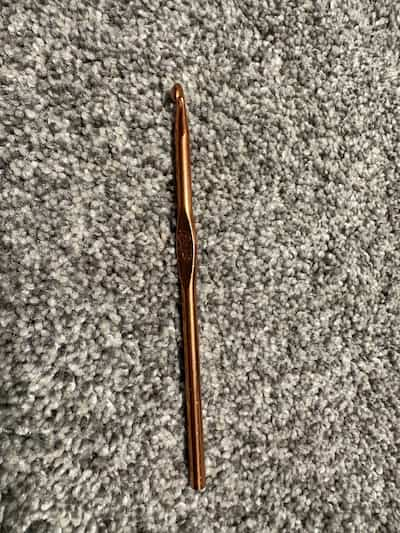
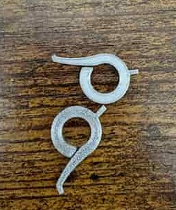
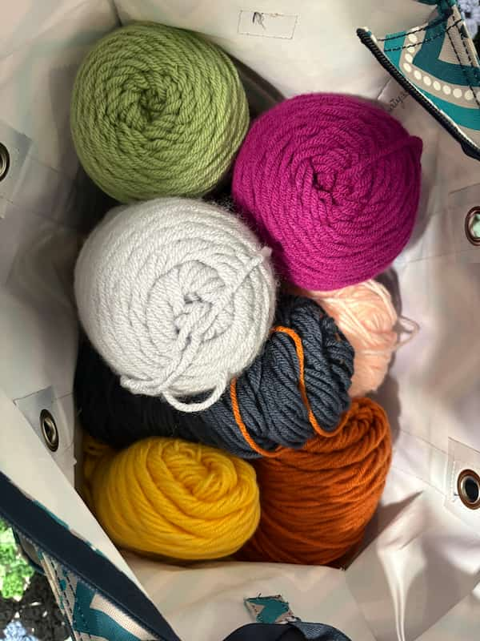
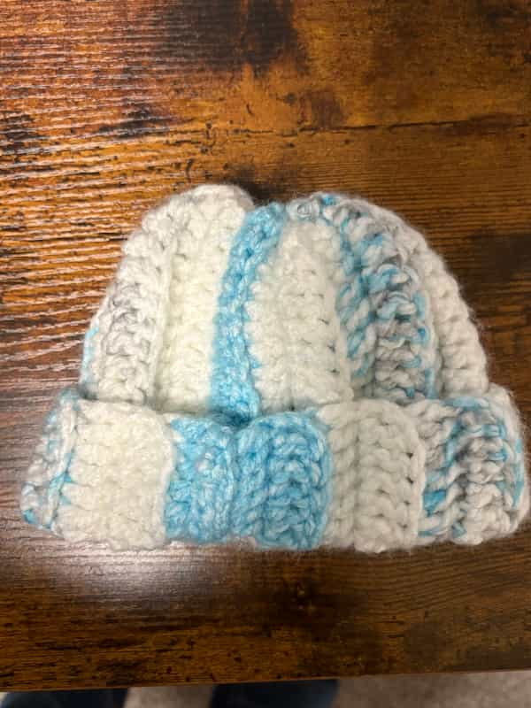
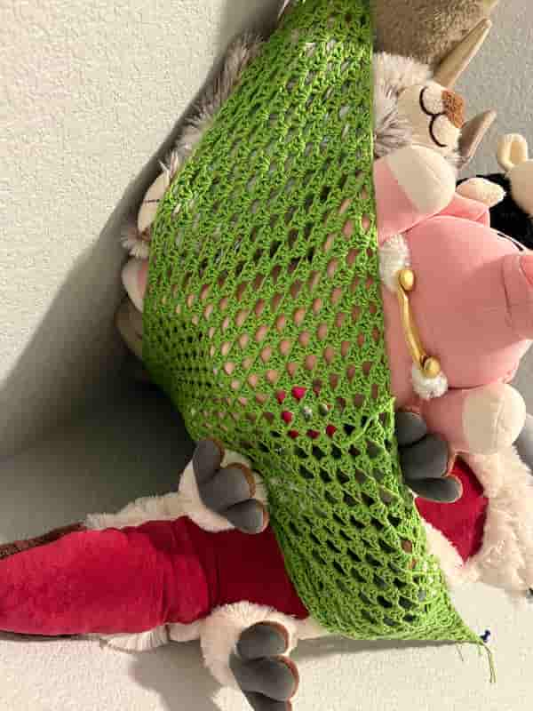
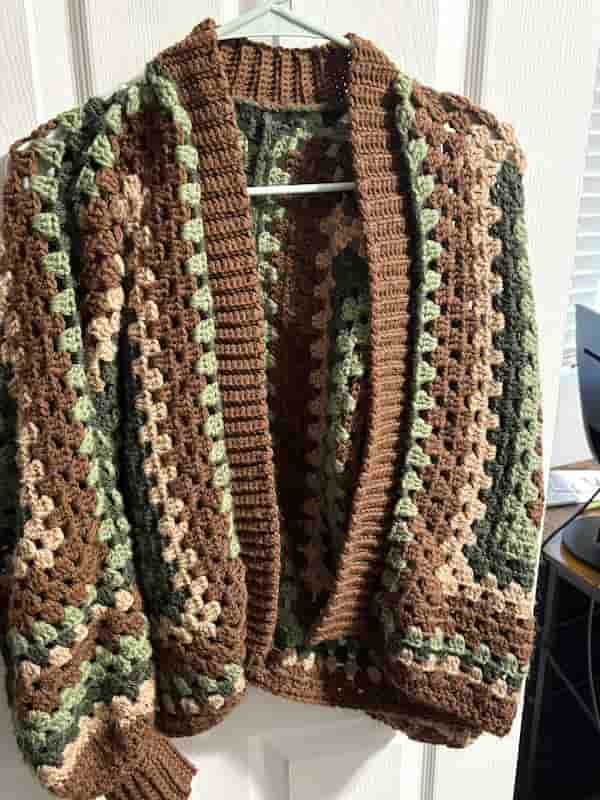
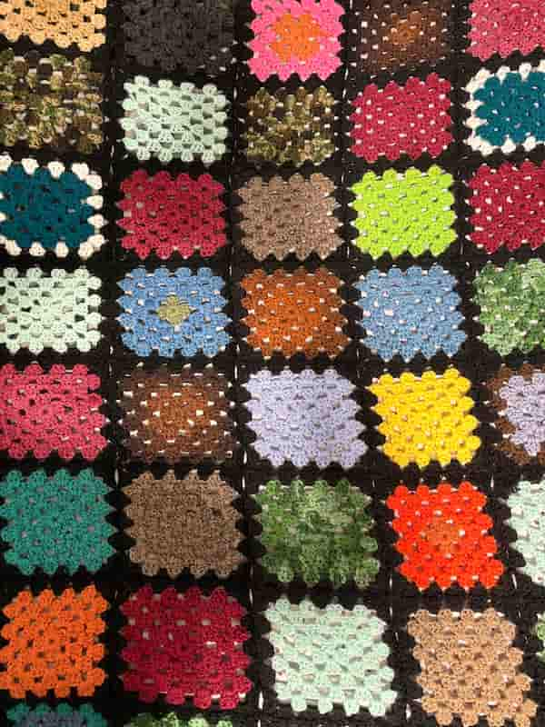

Crochet Stock photos by VecteezyCrochet Artist
Keyarra Bassett
Come explore my journey through learning how to crochet. Please join in, and try any of the projects that you see for your self.
Crochet Tools



Favorite projects
Baby hat
Light blue baby and white baby hat

Net
Green Net for storage

Sweater
A hexagon sweater made with browns and greens.

Scrap Blanket
Granny Square blanket made with scrap yarn.
